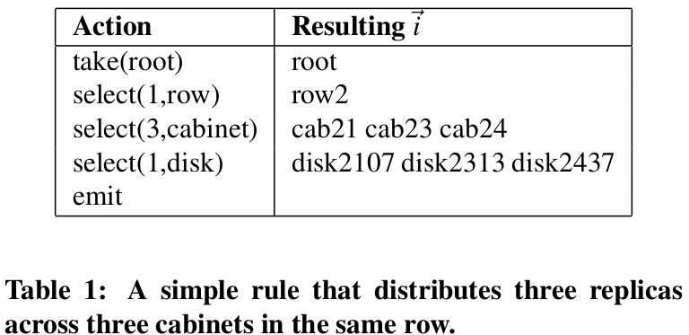
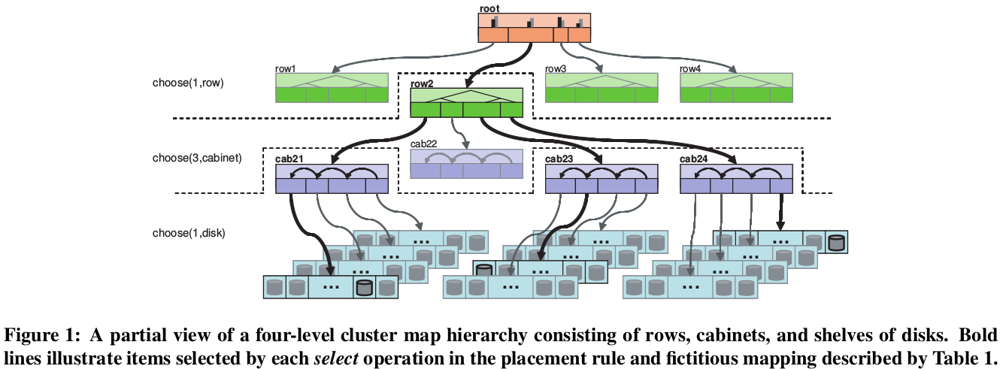

Motivation of this paper: Most systems simply write new data to underutilized devices. This approach does not mixes old and new data together, leading to load imbalance. However, simply hash-based distribution fails to cope with changes in the number of devices, incurring a massive reshuffling of data. Thus this paper proposes a pseudo-random data distribution algorithm that efficiently and robustly distributes object replicas across heterogeneous, structured storage cluster.
CRUSH algorithm:
The two key goals of CRUSH are
efficiency and scalability of the mapping algorithm.
minimal data migration to restore a balanced distribution when the cluster changes due to the addition or removal of devices.
It distributes data objects among storage devices according to a per-device weight value, approximating a uniform robability distribution. Storage devices are assigned weights by the administrator to control the relative amount of data they are responsible for storing.
The data distribution policy is defined in terms of placement rules that specify how many replica targets are chosen from the cluster and what restrictions are imposed on replica placement.


Bucket type: Each bucket type is based on a different internal data structure and utilizes a different function for pseudo-randomly choosing nested items during the replica placement process, representing a different tradeoff between computation and reorganization efficiency.
Map changes and data movement: The key idea of it is when an individual device fails, CRUSH flags the device but leaves it in the hierarchy. Such cluster map changes result in an optimal fraction, because only data on the failed device is moved and needs to be remapped to new storage targets.
Evaluation:
Data distribution: measure the distribution of objects across devices contained in a variety of bucket types and compared the variance in device utilization to the binomial probability distribution.
Reorganization and Data Movement: Movement factor V.S OSDs added or removed, Movement factor V.S Original bucket size
Algortithm: Time V.S Cluster size, Time V.S Bucket size
Strength (Contributions of the paper)
This paper presents a pseudo-random data distribution algorithm with two key advantages:
1) any party in a large system can independently calculate the location of any object.
2) little metadata is required is mostly static, changing only when devices are added or removed
Mapping calculations in CRUSH have running time, requiring only tens of microseconds to execute with thousands of devices.
Weakness (Limitations of the paper)
Although the rule structure in this paper is currently enough to support the basic data distribution policies. How to design a more powerful rule structure?
This algorithm highly relies on a suitably strong multi-input integer hash function. It can be a bottleneck of this algorithm.
In the evaluation of reliability, it mentions it is difficult to quantify the magntitude of the improvement in overall system reliability in the absence of a specific cluster configuration and associated historical failure data to study.
Future Work
For the first weakness, it can consider to design some more flexible rule structures
For the second weakness, one can figure out faster hashing techniques